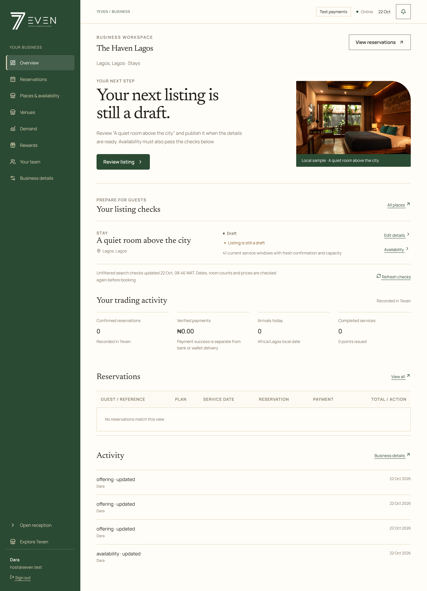
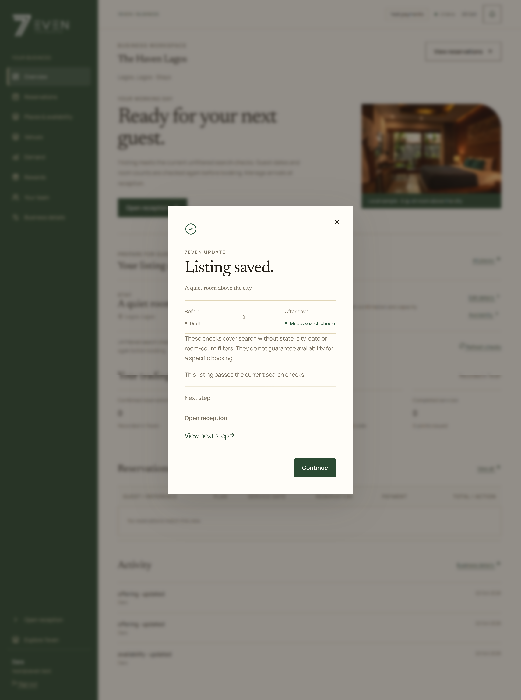

The readiness hand-off
1. Open the required task. 2. Save availability in the existing focused dialog. 3. Read the confirmation only after the server commits. Closing it returns to refreshed operational data. No optimistic readiness claim or automatic dismissal. The screenshots use disposable local sample inventory.

1. Persisted listing checks and contextual action
2. Server-confirmed publication and fresh before/after checks 3. Next task changes to reception after the persisted checks pass
3. Next task changes to reception after the persisted checks pass